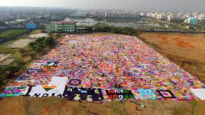

Overview
Crafting includes DIY projects and handmade crafts, from knitting to woodwork. It's a wonderful way to explore creativity and make something unique.
Benefits
Mental Health Benefits
Crafting helps with relaxation and mindfulness, providing a soothing outlet for stress.
Skill Development
It develops hands-on creativity and problem-solving skills, boosting your confidence and abilities.
Materials and Requirements
To get started with crafting, you'll need basic supplies like:
- Fabric
- Yarn
- Wood
- Glue and scissors

Getting Started
Start with simple projects like knitting scarves or creating paper crafts to build your confidence and skills.
Levels of Engagement
Begin with small, easy-to-complete projects and gradually work your way up to advanced techniques like woodworking or pottery.

Social and Community Aspects
Join crafting communities, attend workshops, or participate in online groups to share your creations and learn from others.

Fun Facts and Trivia
The world’s largest knitting project was a 20-mile-long scarf! Crafting can be as simple or as ambitious as you want it to be.
 Start crafting today—let your creativity flow!